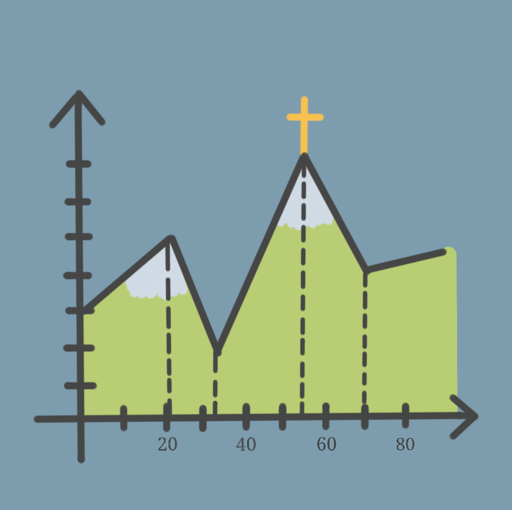

Systeme begegnen uns überall im Leben. Ob im Straßenverkehr, bei der Urlaubsplanung oder in der Küchenschublade - Strukturen können im Alltag eine große Hilfe darstellen. Sie sind jedoch nicht nur praktisch, sondern können auch einfach nerdig sein und Spaß machen.
Auf dieser Website findest du ein bisschen Inspiration, wie sich Nützliches und Humorvolles systematisch verbinden lassen.
Viel Spaß beim Stöbern und Entdecken!
Wandern
Die Seven Summits von Bodenmais - Natur pur auf den höchsten Gipfeln im Bayerischen Wald
Garten
Unkrautpflege, Schneckenparadies und Ernteglück - Im Einklang mit der Natur mit einem bienenfreundlichen und pflegeleichten Gemüsegarten
Gaming online
Genshin Impact - Tipps und Tricks rund um das beliebte Fantasy-Action-Rollenspiel
Gaming offline
Terraforming Mars - Wir erobern uns systematisch den Mars
Radfahren
On the road auf zwei Rädern - Touren, Kauftipps und mehr
Finde dein System
System ist für dich ein Fremdwort und du weißt nicht, was dich hier interessieren könnte? Finde heraus, bei welchem System auch du ein Match finden könntest